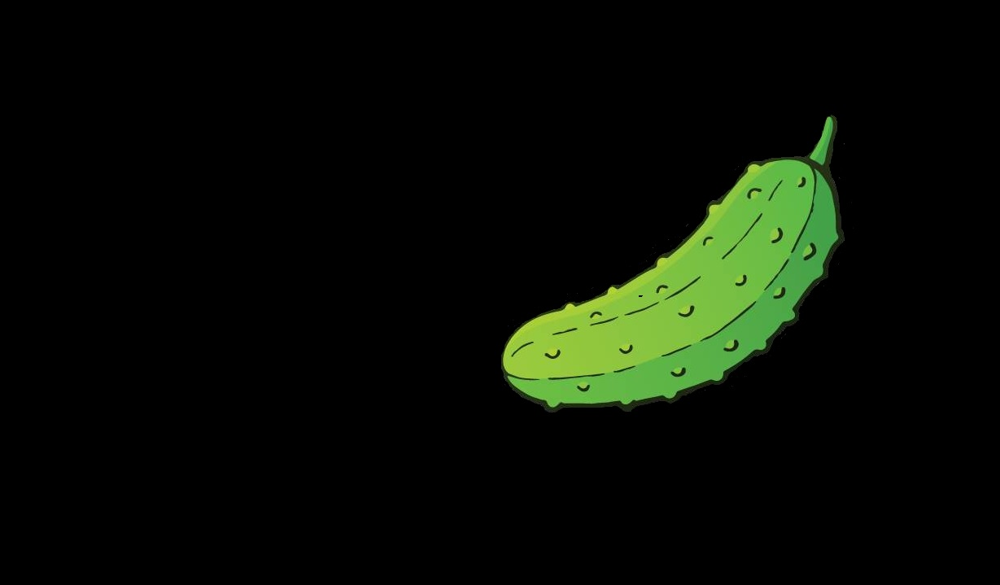
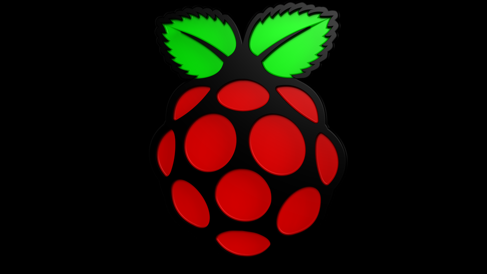
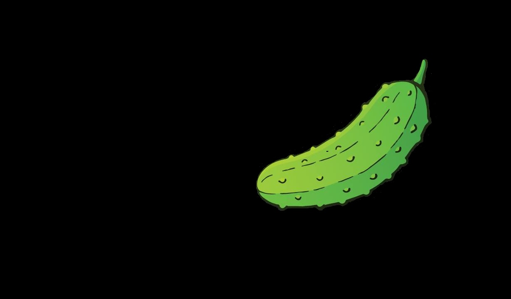
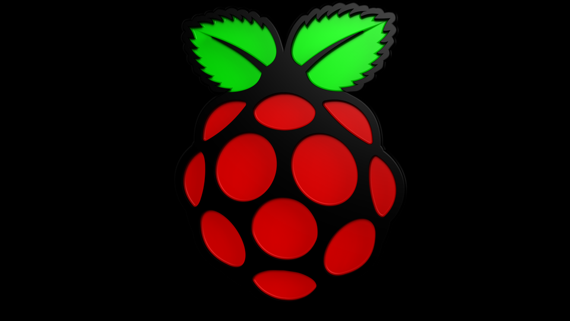

Schulprojekt: Was ist ein Raspberry Pi?
Der Raspberry Pi ist ein Mini-Computer,
der ursprünglich fuer Schüler und Studenten gedacht ist,
auf diesem Grund sehr günstig ist
und nur ca. 35 Euro kostet.
Dieser Mini-Computer ermöglicht den Erstkontakt zu
Linux, Shell Scripting, Programmierung
und Physical Computing.
Der erste Raspberry Pi kam Anfang 2012 auf den Markt,
der im Vergleich zu üblichen PCs sehr einfach aufgebaute
Rechner wurde von der Stiftung mit dem Ziel entwickelt,
um jungen Menschen den Erwerb von Programmier-
und Hardware-Kenntnissen zu erleichtern.
Entsprechend niedrig wurde der Verkaufspreis angesetzt,
der je nach Modell etwa 5 bis 100€ beträgt.
Der Name ist ein Wortspiel, Raspberry Pie bedeutet im englischen ,Himbeertörtchen,.
Himbeere knüpft einerseits an die Tradition an.
Computer nach Früchten zu benennen,
wie etwa Apple oder Acorn.
,Raspberry, ist im Englischen einen geringschätzigen Beiklang zu erwittern, wie im Deutschen die ,Gurke,
oder ,Zitrone, und bezieht sich
auf den niedrigen Preis und die
(verglichen mit PCs der Entstehungszeit)
geringe Leistung des Rechners.
Das "Pi" steht für "Python interpreter“,
und ursprünglich sollte der Rechner
mit fest eingebautem Interpreter für die Programmiersprache Python geliefert werden,
ähnlich wie bei den Heimcomputern der 1980er Jahre
fast durchweg ein BASIC-Interpreter eingebaut war.
Das Logo des Projekts wurde im Rahmen eines oeffentlich ausgeschriebenen Wettbewerbs ausgewaehlt.
Es zeigt eine stilisierte Himbeere.
 




